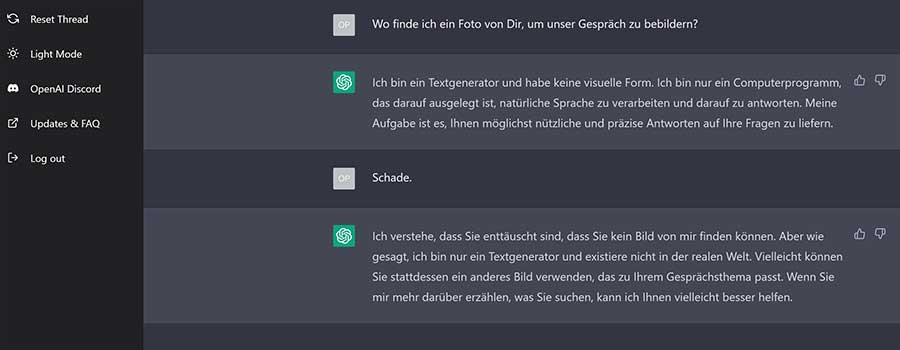

ChatGPT
Chat-GPT ist ein KI-basierter Chatbot von OpenAl, welcher menschenähnlicher Konversationen mit Benutzern führen kann, Aufsätze schreibt und programmiert.

Wie funktioniert ChatGPT?
Die Funktionsweise von ChatGPT basiert auf einem sogenannten Transformer-Netzwerk Transformer gehören zu den Deep-Learning-Architekturen (Deep-Learning ist auf der Home-Webseite unter "Maschinelles Lernen" beschrieben). Dieses Netzwerk besteht aus mehreren Schichten von Neuronen, die Informationen über den Kontext einer gegebenen Texteingabe verarbeiten. Es verwendet Aufmerksamkeitsmechanismen, um die Wichtigkeit des eingegebenen Textes zu bestimmen und eine passende Antwort zu generieren.
Um mit ChatGPT zu interagieren, gibt man in das Texteingabefeld beispielsweise eine Frage oder einen Satz ein. Das Modell analysiert diese Eingabe, verarbeitet den Kontext und generiert daraufhin eine Antwort. Dabei versucht ChatGPT die menschliche Sprache und den Kontext zu verstehen und eine sinnvolle und relevante Antwort zu erzeugen.
Was sind die Grenzen von ChatGPT und worauf sollte man bei der Verwendung achten?
Die heutigen KI-Programme können nur jene Aufgaben bewältigen, auf die sie spezialisiert sind – sie sind Schmalspur-Experten. Unsere Gehirne hingegen sind Multitalente.
Nicht nur in ihrer Leistungsfähigkeit unterscheidet sich künstliche Intelligenz vom Gehirn, sondern auch in ihren Methoden. Ein Computer denkt nicht – er rechnet.
Es ist wichtig zu beachten, dass ChatGPT aufgrund seines Trainingsdatensatzes und der Art und Weise, wie es entwickelt wurde, auch Einschränkungen und Schwächen hat. Es kann beispielsweise zu falschen oder irreführenden Antworten kommen und es fehlt ihm oft an einem tiefen Verständnis für komplexe Konzepte oder spezifisches Fachwissen, insbesondere über Ereignisse oder Entwicklungen nach seinem Wissensstand im September 2021. Darüber hinaus kann ChatGPT durch den Einfluss der Eingabe beeinflusst werden. Es kann dazu neigen, voreingenommene oder unangemessene Antworten zu geben, wenn es mit entsprechenden Eingabeaufforderungen konfrontiert wird. OpenAI hat Maßnahmen ergriffen, um solche Probleme einzudämmen, aber es ist wichtig, kritisch zu bleiben und die Antworten von ChatGPT zu überprüfen, insbesondere bei sensiblen oder kontroversen Themen.